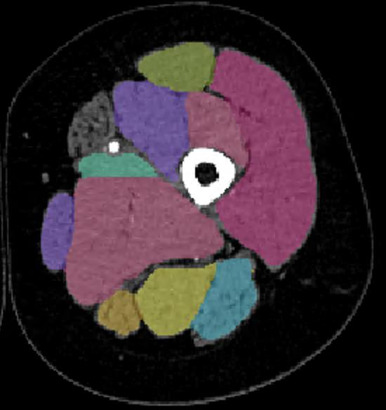

Quantifying Thigh Muscle Variability via Automated CT Segmentation
Building the lower-extremity muscle segmentation component of UMTRI's HERMES human body model. Established an automated CT preprocessing pipeline and a hand-labeled 3D ground-truth dataset (45 clinical scans) to fine tune the nnU-Net architecture behind TotalSegmentator so it can resolve individual thigh muscles. Outputs preserve the muscle orientation and cross-sectional area needed for active crash modeling.